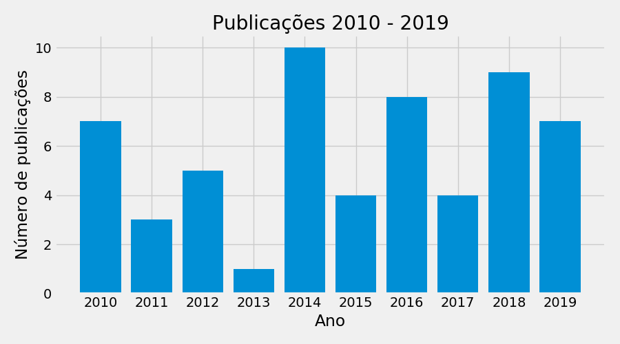
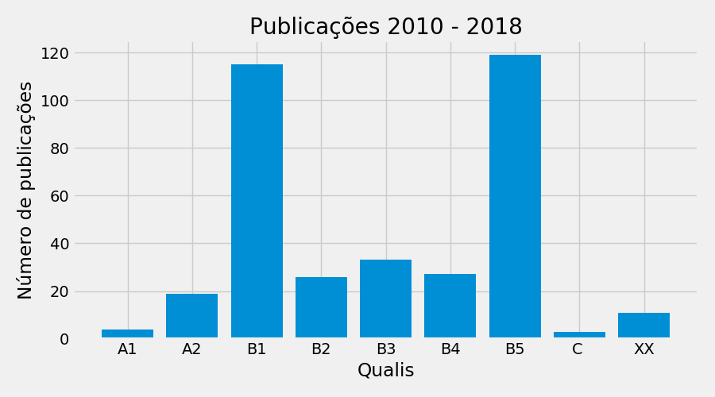
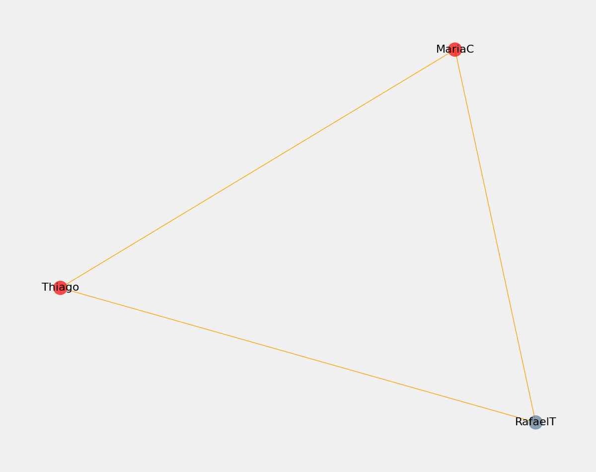

Nome: Rafael Cesar Tieppo Nascimento: Cascavel - PR Instituição: Universidade do Estado de Mato Grosso Resumo: Rafael Tieppo possui graduação em Engenharia Agícola pela Universidade Estadual do Oeste do Paraná (2001), mestrado em Engenharia Agrícola pela Universidade Estadual do Oeste do Paraná (2004) e doutorado em Engenharia de Sistemas Agrícolas pela Universidade de São Paulo, ESALQ-USP com período sanduíche na Aarhus University - Dinamarca. Atualmente é professor adjunto da Universidade do Estado de Mato Grosso. Tem experiência na área de Engenharia Agrícola, atuando no momento com os seguintes temas: agricultura digital, geoprocessamento e mecanização agrícola.
Nome: Thiago Libório Romanelli Nascimento: Piracicaba - SP Instituição: Universidade de São Paulo Resumo: Atualmente é Professor Titular do Departamento de Engenharia de Biossistemas, ESALQ/USP. Atua nos temas: Fluxos de Materiais e de Energia em Sistemas de Produção, Sustentabilidade, Análises de Ciclo de Vida e Viabilidade econômica de adoção de tecnologia. É Engenheiro Agrônomo pela Universidade de São Paulo (2000), mestre em Máquinas Agrícolas pela Universidade de São Paulo (2003) e doutor em Recursos Florestais pela Universidade de São Paulo (2007), tendo sido Research Associate do Center for Environmental Policy da University of Florida (2005-2006), Professor Doutor (2008-2013) e Livre Docente em Mecânica e Máquinas Motoras pela Universidade de São Paulo (2013) . Fulbright Scholar - Cátedra de Ciências Agrárias na University of Nebraska/Lincoln (2017).
Nome: Maria Carolina da Silva Andrea Nascimento: Ribeirao Preto - SP Instituição: Universidade do Estado de Mato Grosso Resumo: Possui graduação em Engenharia Agronômica, Mestrado e Doutorado pelo Programa de Engenharia de Sistemas Agrícolas, realizados pela Universidade de São Paulo (USP/ESALQ).
Na graduação participou de pesquisa relacionada com o uso eficiente de água e nitrogênio na produção de forrageiras destinadas à produção de bioetanol. No mestrado avaliou a eficiência do uso de insumos do ciclo de produção de forrageiras. Durante o doutorado utilizou modelo de desenvolvimento de culturas para avaliar a quebra de produtividade e lucratividade da produção da cultura do milho relacionada à variabilidade climática e aplicação de fertilizante nitrogenado.
Atuou como pesquisadora de Pós-doutorado na Universidade do Estado de Mato Grosso - UNEMAT.
Atualmente é professora do ensino superior na Universidade do Estado de Mato Grosso - UNEMAT, ministrando disciplinas da área de engenharia agrícola para o curso de bacharelado em agronomia.
Linha de pesquisa em gestão de sistemas de produção, agrometeorologia, sustentabilidade de sistemas de produção, uso de modelos de desenvolvimento de culturas.
Período avaliado: 2010 - 2019
Número de membros na equipe: 3
Número de projetos de extensão: 16
Número de projetos de pesquisa: 15
Livros publicados: 1
Capítulos publicados: 4
Artigos completos publicados em periódicos: 61
Orientações:
dissertação de mestrado: 10
iniciacao_cientifica: 15
monografia_de_conclusao_de_curso_aperfeicoamento_e_especializacao: 2
orientacao-de-outra-natureza: 29
trabalho_de_conclusao_de_curso_graduacao: 18
tese de doutorado: 7
Integração de indicadores e de níveis de tomada de decisão nas práticas sustentáveis na agricultura de larga escala. início: 2014.0. fim: ATUAL.['Thiago Libório Romanelli', 'Marcos Milan', 'João Gomes Martines Filho'].
Adequação Ambiental dos Departamentos da ESALQ. início: 2015.0. fim: 2016.['Thiago Libório Romanelli', 'Nara Perobelli de Moraes', 'Carolina Correa Cauzzo'].
As tendências da mecanização agrícola e da bioenergia no Brasil. início: 2015.0. fim: 2016.['Thiago Libório Romanelli', 'Marcos Milan', 'Nelson Cerino Franco Junior', 'João Paulo Soto Veiga'].
Planejamento e dimensionamento do parque de máquinas agrícolas do Campus Luiz de Queiroz - USP/Piracicaba. início: 2015.0. fim: 2015.['Thiago Libório Romanelli', 'William Cesar Asmegas Sobrinho'].
Projeto de extensão em Engenharia de Sistemas Agrícolas. início: 2016.0. fim: 2018.['Rafael Cesar Tieppo', 'Rivanildo Dallacort', 'Adalberto Santi', 'Ricardo José da Silva'].
Adequação da Biblioteca Central (DiBD) do Campus Luiz de Queiroz seguindo as diretrizes do Prêmio Paulista de Qualidade da Gestão (PPQG). início: 2016.0. fim: 2017.['Thiago Libório Romanelli', 'Nara Perobelli de Moraes'].
Indicadores de sustentabilidade e do sistema de monitoramento do Plano Diretor Socioambiental do campus Luiz de Queiroz. início: 2016.0. fim: 2017.['Thiago Libório Romanelli', 'Marcos Paulo Marcuz Venier', 'Matheus Rosa Taxa'].
Projeto de Implementação de um Sistema de Gestão Ambiental em Moradias dos Estudantes da ESALQ - USP, em Piracicaba.. início: 2017.0. fim: 2018.['Thiago Libório Romanelli', 'Allan Patrick C. Carmo', 'Rafaela Duarte Pagliarini'].
Revisão dos indicadores de sustentabilidade do Plano Diretor Socioambiental do campus Luiz de Queiroz segundo as Políticas Ambientais da USP.. início: 2017.0. fim: 2018.['Thiago Libório Romanelli', 'Pedro Henrique Miranda e Silva', 'Julia de Souza Vieira'].
Geotecnologias aplicadas à mudanças climáticas e agricultura digital - GEOCLIMAT-MT. início: 2018.0. fim: 2020.['Rafael Cesar Tieppo', 'MORAES DIAS, VANESSA RAKEL', 'Rivanildo Dallacort', 'Wini da Rocha Clarindo'].
Articulação e Apoio para a Implementação do Plano Diretor Socioambiental Participativo do Campus Luiz de Queiroz. início: 2018.0. fim: ATUAL.['Thiago Libório Romanelli', 'Mayra Grous'].
Projeto Escolas Públicas na ESALQ. início: 2019.0. fim: ATUAL.['Thiago Libório Romanelli'].
Programa de extensão GeoClimaMT: Difusão de geotecnologias e informações climáticas no desenvolvimento regional. início: 2020.0. fim: ATUAL.['Rafael Cesar Tieppo', 'Rivanildo Dallacort', 'Edenir Maria Serigatto'].
Projeto de extensão GeoClimaMT - Boeltim, vídeos, cursos e palestras para difusão de conhecimento técnico. início: 2020.0. fim: ATUAL.['Rafael Cesar Tieppo', 'Willian Fenner', 'MORAES DIAS, VANESSA RAKEL', 'Rivanildo Dallacort'].
Projetos de pesquisa
CETEGEO-SR - Centro Tecnológico de Geoprocessamento e Sensoriamento Remoto aplicado à produção de Biodiesel. início: 2010.0 fim: ATUAL.['Rafael Cesar Tieppo', 'Rivanildo Dallacort'].
Incorporação de energia na vida útil de uma colhedora autopropelida de cana-de-açúcar. início: 2010.0 fim: 2012.['Thiago Libório Romanelli', 'Filipe Alonso Saad', 'Edemilson José Mantoam'].
Aplicação e transferência de tecnologias na otimização de sistemas agrícolas sustentáveis. início: 2011.0 fim: ATUAL.['Rafael Cesar Tieppo', 'Maria Cândida Moitinho Nunes', 'Santino Seabra Júnior', 'Rivanildo Dallacort', 'Adalberto Santi'].
Diversificação e ampliação da base produtiva do Estado de Grosso, a partir do zoneamento agrícola da soja, feijão, cana-de-açúcar, girassol, crambe e pinhão-manso. início: 2012.0 fim: 2014.['Rafael Cesar Tieppo', 'Rivanildo Dallacort', 'Adalberto Santi', 'MIRIAM H. INOUE', 'Alberto Zolin Cornélio', 'Paulo Sérgio Lourenço de Freitas', 'Karolina Ascari de Souza'].
Identificação de Parâmetros de Solo e Planta Determinantes no Manejo Sustentável da Cana-de-açúcar para Energia com Recursos de Agricultura de Precisão.. início: 2012.0 fim: 2014.['Thiago Libório Romanelli', 'José Paulo Molin', 'Paulo Sérgio Graziano Magalhães', 'Ricardo Yassushi Inamasu', 'Oscar Antonio Braunbeck', 'Zigomar Menezes de Souza', 'Gener Tadeu Pereira'].
Fluxos de Energia e Custo Operacional de Sistemas Mecanizados na Produção de Grãos. início: 2012.0 fim: 2015.['Rafael Cesar Tieppo', 'ROMANELLI, THIAGO L.'].
Diversificação e ampliação da base produtiva da bacia do Alto Paraguai como estratégia inovadora na otimização dos sistemas agrícolas regionais. início: 2013.0 fim: 2016.['Rafael Cesar Tieppo', 'Rivanildo Dallacort', 'Adalberto Santi', 'Ronicely Pereira da Rocha', 'Márcio Osvaldo Magalhães', 'Rony Bert de Oliveira'].
Caracterização do potencial de geração e consumo de eletricidade de um campus universitário com perfil agrícola.. início: 2014.0 fim: 2020.['Thiago Libório Romanelli', 'Amanda Dechen Silva', 'Camila Costa de Souza', 'Bruno Font Aranda', 'Aleda Martins Coutinho do Nascimento', 'Karina Amorim Sousa', 'Renata Rodrigues Vieira da Silva'].
Depreciação econômica de diferentes marcas comerciais de tratores agrícolas usados no mercado brasileiro. início: 2014.0 fim: 2015.['Thiago Libório Romanelli', 'Giovani Apolari Ghirardello'].
Otimização dos recursos hídricos aplicados a culturas agrícolas no Estado de Mato Grosso - Brasil. início: 2015.0 fim: ATUAL.['Rafael Cesar Tieppo', 'Santino Seabra Júnior', 'Rivanildo Dallacort', 'Adalberto Santi', 'Cleonir Andrade Faria Júnior', 'Willian Fenner', 'João Danilo Barbieri', 'Karolina Ascari de Souza', 'Marco Antônio Camilo de Carvalho'].
Variabilidade da temperatura e evaporação da água sob diferentes coberturas de solo e sua influência no Kc dual da cultura do milho. início: 2015.0 fim: ATUAL.['Rafael Cesar Tieppo', 'Santino Seabra Júnior', 'Rivanildo Dallacort', 'Cleonir Andrade Faria Júnior', 'SANTI, ADALBERTO', 'João Danilo Barbieri', 'Ronicely Pereira da Rocha', 'Dejânia Vieira de Araújo', 'Anísio da Silva Nunes', 'Paulo Sérgio Lourenço de Freitas', 'Karolina Ascari de Souza', 'Márcio Osvaldo Magalhães', 'Marco Antônio Camilo de Carvalho', 'Olaurildes Correntes'].
Incorporação de energia no ciclo de vida de máquinas agrícolas. início: 2015.0 fim: ATUAL.['Rafael Cesar Tieppo', 'ROMANELLI, THIAGO L.', 'Leandro Maria Gimenez', 'Edemilson José Mantoam'].
Modelo para predição de dias agronomicamente viáveis para operações agrícolas mecanizadas. início: 2017.0 fim: ATUAL.['Maria Carolina da Silva Andrea', 'Rafael Cesar Tieppo', 'Thiago Libório Romanelli', 'Rivanildo Dallacort', 'Adalberto Santi', 'Erivelto Mercante', 'André Tavares de Vasconcelos', 'João Danilo Barbieri', 'Emili Ferreira Campachi', 'Julia Gallo Barreto'].
Uso de imagens de satélites e variáveis climáticas para estimativa da produtividade da cultura do milho. início: 2019.0 fim: ATUAL.['Rafael Cesar Tieppo', 'Maria Carolina Silva Andrea', 'MORAES DIAS, VANESSA RAKEL', 'BARBIERI, JOÃO DANILO', 'Emili Ferreira Campachi', 'Julia Gallo Barreto', 'Diego F Daniel', 'Rivanildo Dallacort', 'Wini da Rocha Clarindo', 'Diennyfer Letícia das Chagas Ramos', 'Gabriel Virgílio Barboza', 'Vitor Alfeu Guedes'].
Resumo da produção de capítulos do grupo 2010-2019
FULL_NAME
2011
2015
2016
TOTAL
0
Thiago Libório Romanelli
1
2
1
4
Publicação em periódicos
Produção de periódicos por ano

Número de publicações por ano.
Produção de periódicos por qualis

Publicações de periódicos por qualis.
Interação entre pesquisadores

Grafo de colaboração entre pesquisadores apenas em artigos
Relação de artigos em periódicos
Mecanización del cultivo de la caña de azúcar. ano: 2010.0, Agrotécnica (Madrid), XX. , JCR -99.0. ['Tomaz Caetano Cannavan Rípoli', 'Thiago Libório Romanelli']
Emissão de CO2 e potencial de conservação de C em solo submetido à aplicação de diferentes adubos orgânicos. ano: 2010.0, Agrarian (Dourados. Online), B3. , JCR -99.0. ['Wininton Mendes Silva', 'CASSIANO CREMON', 'Nilbe Carla Mapeli', 'Rafael Cesar Tieppo', 'Jucélio Marcos Carvalho', 'Loana Longo', 'Marcelo Ferri', 'Wellington Azambuja']
Energy flow in castor bean (Ricinus communis L.) production systems. ano: 2010.0, Scientia Agrícola (USP. Impresso), A1. , JCR -99.0. ['Silva, Adilson Nunes da', 'Thiago Libório Romanelli', 'Reichardt, Klaus']
Material flow determination through agricultural machinery management. ano: 2010.0, Scientia Agrícola (USP. Impresso), A1. , JCR -99.0. ['Thiago Libório Romanelli', 'Milan, Marcos']
Energy performance of a production system of eucalyptus. ano: 2010.0, Revista Brasileira de Engenharia Agrícola e Ambiental (Impresso), B1. , JCR 0.6. ['Thiago Libório Romanelli', 'Milan, Marcos']
Sistema computacional para otimização na seleção de fertilizantes. ano: 2010.0, Scientia Plena, B5. , JCR -99.0. ['Rafael Cesar Tieppo', 'CASSIANO CREMON', 'Luís César da Silva', 'Rivanildo Dallacort', 'Adalberto Santi']
Capacity in mechanical harvesting of sugar cane. ano: 2010.0, SCIENTIA AGRICOLA, A1. , JCR -99.0. ['Paulo Rodrigues Peloia', 'Marcos Milan', 'Thiago Libório Romanelli']
Desenvolvimento inicial de plantas de girassol em condições de estresse hídrico. ano: 2011.0, Enciclopédia biosfera, B5. , JCR -99.0. ['Severino de Paiva Sobrinho', 'Rafael Cesar Tieppo', 'Tonny José Araújo da Silva']
Desenvolvimento de um aparelho alternativo para determinação da estabilidade de agregados via úmida. ano: 2011.0, Scientia Plena, B5. , JCR -99.0. ['Rafael Cesar Tieppo', 'Alexandre Luiz Puhl', 'CASSIANO CREMON', 'Wininton Mendes Silva', 'Jucélio Marcos Carvalho']
Desenvolvimento de um penetrômetro manual eletrônico. ano: 2011.0, Acta Scientiarum. Technology (Online), B1. , JCR 0.4. ['Rafael Cesar Tieppo', 'Antonio Gabriel Filho', 'Suedêmio de Lima Silva', 'Estor Gnoatto']
Material embodiment and energy flows as efficiency indicators of soybean (Glycine max) production in Brazil. ano: 2012.0, Engenharia Agrícola (Impresso), B1. , JCR -99.0. ['Thiago Libório Romanelli', 'Hudson Souza Nardi', 'Filipe Alonso Saad']
Machinery Management as an Environmental Tool - Material Embodiment in Agriculture. ano: 2012.0, E-journal - CIGR, B1. , JCR -99.0. ['Thiago Libório Romanelli', 'Marcos Milan']
Distribuição e probabilidade de ocorrência de precipitação em Cáceres (MT). ano: 2012.0, Pesquisa Agropecuária Tropical (Impresso), B1. , JCR -99.0. ['Jaqueline Aguilla Pizzato', 'Rivanildo Dallacort', 'Rafael Cesar Tieppo', 'Alcir José Modolo', 'CASSIANO CREMON', 'Patrícia Simone Palhana Moreira']
Energy assessment for variable rate nitrogen application. ano: 2012.0, E-journal - CIGR, B1. , JCR -99.0. ['André Freitas Colaço', 'Fabrício Pinheiro Povh', 'José Paulo Molin', 'Thiago Libório Romanelli']
Energy-Based Evaluations on Eucalyptus Biomass Production. ano: 2012.0, International Journal of Forestry Research, B3. , JCR -99.0. ['Thiago Libório Romanelli', 'Marcos Milan', 'Rafael Cesar Tieppo']
Desempenho agronômico de alface americana fertilizada com torta de filtro em ambiente protegido. ano: 2013.0, Horticultura Brasileira (Impresso), B1. , JCR -99.0. ['SANTI, ADALBERTO', 'SCARAMUZZA, WALCYLENE LMP', 'NEUHAUS, ALEXANDRO', 'DALLACORT, RIVANILDO', 'KRAUSE, WILLIAN', 'Rafael Cesar Tieppo']
Energy demand in sugarcane residue collection and transportation. ano: 2014.0, E-journal - CIGR, B1. , JCR -99.0. ['Rafael Cesar Tieppo', 'Maria Carolina Silva Andrea', 'Leandro Maria Gimenez', 'ROMANELLI, THIAGO L.']
Energy Demand in Sugarcane Residue Collection and Transportation. ano: 2014.0, E-journal - CIGR, B1. , JCR -99.0. ['Rafael Cesar Tieppo', 'Maria Carolina da Silva Andrea', 'LEANDRO MARIA GIMENEZ', 'Thiago Libório Romanelli']
Embodied energy of sugarcane harvesters. ano: 2014.0, BIOSYSTEMS ENGINEERING, A1. , JCR 3.0. ['Edemilson José Mantoam', 'Marcos Milan', 'Leandro Maria Gimenez', 'Thiago Libório Romanelli']
Energy demand in agricultural biomass production in Parana state, Brazil. ano: 2014.0, E-journal - CIGR, B1. , JCR -99.0. ['Maria Carolina Silva Andrea', 'Rafael Cesar Tieppo', 'Leandro Maria Gimenez', 'Fabrício Pinheiro Povh', 'Tobias J Katsman', 'ROMANELLI, THIAGO L.']
Concentração de material particulado na região de Tangará da Serra-MT, sul da amazônia legal. ano: 2014.0, Revista Brasileira de Geografia Física, B5. , JCR -99.0. ['Patrícia Simone Palhana Moreira', 'Rivanildo Dallacort', 'Idilaine de Fatima Lima', 'Rafael Cesar Tieppo', 'Cristiano Santos']
Embodied energy associated with the materials used in irrigation systems: Drip and centre pivot. ano: 2014.0, Biosystems Engineering, A1. , JCR 3.0. ['Adriano Valentim Diotto', 'Marcos Vinícius Folegatti', 'Sérgio Nascimento Duarte', 'Thiago Libório Romanelli']
Energy flow in the soybean biodiesel production chain using ethanol as solvent extraction of oil from soybeans. ano: 2014.0, Biomass & Bioenergy, A1. , JCR -99.0. ['Naiane Sangaletti-Gerhard', 'Thiago Libório Romanelli', 'Thais Maria Ferreira de Souza Vieira', 'Rodrigo Navia', "Marisa Aparecida Bismara Regitano d'Arce"]
Energy Demand in Agricultural Biomass Production in Parana state, Brazil. ano: 2014.0, E-journal - CIGR, B1. , JCR -99.0. ['Maria Carolina da Silva Andrea', 'Rafael Cesar Tieppo', 'LEANDRO MARIA GIMENEZ', 'Fabricio Pinheiro Povh', 'Tobias Katsman', 'Thiago Libório Romanelli']
Sowing dates and plant density of peanut cultivars in different soil and climatic conditions of Mato Grosso state, Brazil. ano: 2014.0, International Journal of Food, Agriculture and Environment (Online), B2. , JCR -99.0. ['João Danilo Barbieri', 'Rivanildo Dallacort', 'Adalberto Santi', 'Kássio de Marco', 'Alcir José Modolo', 'Santino Seabra Júnior', 'Ronicely Pereira da Rocha', 'Rafael Cesar Tieppo']
Energy demand in citrus production under varied operational efficiency values. ano: 2014.0, Engenharia Agrícola (Impresso), B1. , JCR -99.0. ['Nelson Cerino Franco Junior', 'Marcos Milan', 'Thiago Libório Romanelli']
Material and energy demand in actual and suggested maintenance of sugarcane harvesters. ano: 2015.0, INTERNATIONAL JOURNAL OF AGRICULTURAL MANAGEMENT, B5. , JCR -99.0. ['Edemilson José Mantoam', 'Thiago Libório Romanelli', 'Marcos Milan']
Agricultural sustainability through agrifood system management. ano: 2015.0, INTERNATIONAL JOURNAL OF AGRICULTURAL MANAGEMENT, B5. , JCR -99.0. ['Dionysis Bochtis', 'Thiago Libório Romanelli', 'Dimitrios Aidonis']
Cost of boundary manoeuvres in sugarcane production. ano: 2015.0, Biosystems Engineering, A1. , JCR 3.0. ['Mark Spekken', 'José Paulo Molin', 'Thiago Libório Romanelli']
Energy embodiment in Brazilian agriculture: an overview of 23 crops. ano: 2015.0, Scientia Agricola, A1. , JCR -99.0. ['VEIGA, JOÃO PAULO SOTO', 'Thiago Libório Romanelli', 'GIMENEZ, LEANDRO MARIA', 'BUSATO, PATRIZIA', 'Milan, Marcos']
A cost prediction model for machine operation in multi-field production systems. ano: 2016.0, SCIENTIA AGRICOLA, A1. , JCR -99.0. ['Remigio Berruto', 'Alessandro Sopegno', 'Patrizia Busato', 'Thiago Libório Romanelli']
Curvas de desempenho de um trator agrícola com recente inserção no mercado utilizando diferentes proporções de biodiesel. ano: 2016.0, Revista Agrogeoambiental, B5. , JCR -99.0. ['Vanderson Rabelo de Paula', 'Carlos Volpato', 'Thiago Libório Romanelli', 'Jackson Antonio Barbosa']
Ações extensionistas do Projeto Rondon no município de Rondon do Pará: um olhar sobre as ciências dos alimentos. ano: 2016.0, Revista de Extensão, B5. , JCR -99.0. ['Diogo Tau Zymberg Tomaszewski', 'Márcio Rezende Ribeiro Soares', 'Nathanael José de Campos', 'Odaléia Telles Marcondes Machado Queiroz', 'Pietro Pizão Gonzalez', 'Rebeca Cristina Ferreira da Silva', 'Samuel de Mello Pinto', 'Thiago Libório Romanelli', 'Vanessa Mendes de Queiroz']
Energy demand and greenhouse gases emissions in the life cycle of tractors. ano: 2016.0, Biosystems Engineering, A1. , JCR 3.0. ['Edemilson José Mantoam', 'Thiago Libório Romanelli', 'Leandro Maria Gimenez']
Spatial variability of the ten-day rainfall in the months in which the sowing of soybean and winter corn begins in the state of Mato Grosso. ano: 2016.0, Científica (Jaboticabal. Online), B3. , JCR -99.0. ['DE MARCO, KÁSSIO', 'MORAES DIAS, VANESSA RAKEL', 'DALLACORT, RIVANILDO', 'LIMA ALVES, ELIS DENER', 'Rafael Cesar Tieppo', 'ARAÚJO, DEJÂNIA VIEIRA DE', 'BARBIERI, JOÃO DANILO']
Energy flows in lowland soybean production system in Brazil. ano: 2016.0, Ciência Rural, B1. , JCR -99.0. ['Maria Carolina da Silva Andrea', 'ROMANELLI, THIAGO LIBÓRIO', 'MOLIN, JOSÉ PAULO']
Usados de valor. ano: 2016.0, Cultivar Máquinas, B5. , JCR -99.0. ['Thiago Libório Romanelli', 'Leandro Maria Gimenez', 'Giovani Apolari Ghirardello']
Hora de cuidar. ano: 2016.0, Cultivar Máquinas, B5. , JCR -99.0. ['Leandro Maria Gimenez', 'Marcos Milan', 'Thiago Libório Romanelli']
Energy Demand and Greenhouse Gases Emissions in the Life Cycle of Coffee Harvesters. ano: 2017.0, CHEMICAL ENGINEERING TRANSACTIONS, A2. , JCR -99.0. ['Edemilson José Mantoam', 'Thiago Libório Romanelli', 'Leandro Maria Gimenez', 'Marcos Milan']
IMPACT OF IRRIGATION AND NITROGEN FERTILIZATION ON THE ENERGY BALANCE AND ENERGY RETURN ON INVESTMENT OF JATROPHA PRODUCTION. ano: 2017.0, Revista brasileira de agricultura irrigada, B3. , JCR -99.0. ['SANTOS, OTÁVIO NETO ALMEIDA', 'ANDRADE, IRINEU PEDRO DE SOUSA', 'LENA, BRUNO PATIAS', 'FOLEGATTI, MARCOS VINÍCIUS', 'DIOTTO, ADRIANO VALENTIM', 'Thiago Libório Romanelli']
Estimativa da capacidade de armazenamento de água no solo para a microrregião da BAP/MT. ano: 2017.0, Revista Ibero-americana de Ciências Ambientais, B5. , JCR -99.0. ['BARBIERI, JOÃO DANILO', 'DALLACORT, RIVANILDO', 'Tiago Oliveira', 'Rafael Cesar Tieppo', 'Dejânia Vieira de Araújo']
Capacidade estática de armazenagem de grãos em Tangará da Serra e microrregião. ano: 2017.0, ESPACIOS (CARACAS), C . , JCR -99.0. ['Nilson Gomes de Souza Júnior', 'Ronicely Pereira da Rocha', 'Adalberto Santi', 'Rafael Cesar Tieppo']
Triple-bottom-line assessment of São Paulo state's sugarcane production based on a Brazilian multi-regional input-output matrix. ano: 2018.0, RENEWABLE & SUSTAINABLE ENERGY REVIEWS, A1. , JCR -99.0. ['João Paulo Soto Veiga', 'Arunima Malik', 'Manfred Lenzen', 'Joaquim Bento de Souza Ferreira Filho', 'Thiago Libório Romanelli']
Energy analysis of Jatropha curcas under irrigation and rainfed at the Southeast Brazilian humid subtropical. ano: 2018.0, E-JOURNAL - CIGR, B1. , JCR -99.0. ['Otávio Neto Almeida Santos', 'Marcos Vinícius Folegatti', 'Bruno P. Lena', 'Adriano Valentim Diotto', 'João Paulo Francisco', 'Thiago Libório Romanelli']
Laboratory temperature-compensating calibration procedure for soil water content determination by reflectometry. ano: 2018.0, CIENTÍFICA (JABOTICABAL. ONLINE), B3. , JCR -99.0. ['VASCONCELOS, ANDRÉ TAVARES', 'Rafael Cesar Tieppo', 'DALLACORT, RIVANILDO', 'SANTI, ADALBERTO', 'ANDREA, MARIA CAROLINA DA SILVA']
Mobility of flumioxazin in argisol at southern Amazon. ano: 2018.0, PERIÓDICO TCHÊ QUÍMICA (MEIO ELETRÔNICO), XX. , JCR -99.0. ['Oscar Mitsuo Yamashita', 'Ricardo Vicentin Carvalho', 'Marco Antônio Camilo de Carvalho', 'Rafael Cesar Tieppo', 'DALLACORT, RIVANILDO']
PRODUCTIVE POTENTIAL OF SECOND GROWING SEASON OF MAIZE IN DIFFERENT SOWING TIMES SUBJECTED TO SUPPLEMENTARY IRRIGATION. ano: 2018.0, REVISTA BRASILEIRA DE MILHO E SORGO (ONLINE), B2. , JCR -99.0. ['BARBIERI, JOAO DANILO', 'DALLACORT, RIVANILDO', 'Rafael Cesar Tieppo', 'FREITAS, PAULO SÉRGIO LOURENÇO DE', 'SANTI, ADALBERTO']
Energy, water and material footprints of agricultural machinery industry. ano: 2018.0, E-JOURNAL - CIGR, B1. , JCR -99.0. ['Edemilson José Mantoam', 'Mesfin Mekonnen', 'Thiago Libório Romanelli']
Sowing speed in no tillage system on early development of maize crop. ano: 2018.0, SCIENTIA PLENA, B5. , JCR -99.0. ['Marcela Vieira Paulo', 'Rafael Cesar Tieppo', 'Alcir José Modolo', 'Rivanildo Dallacort', 'SANTI, ADALBERTO']
Water, Energy, and Carbon Footprints of Bio-ethanol from the US and Brazil. ano: 2018.0, ENVIRONMENTAL SCIENCE & TECHNOLOGY, A1. , JCR 7.1. ['Mesfin Mekonnen', 'Thiago Libório Romanelli', 'Chittaranjan Ray', 'Arjen Hoekstra', 'Adam Liska', 'Christopher Neale']
Variability and limitations of maize production in Brazil: Potential yield, water-limited yield and yield gaps. ano: 2018.0, AGRICULTURAL SYSTEMS, A1. , JCR 4.1. ['Maria Carolina da Silva Andrea', 'BOOTE, KENNETH J.', 'SENTELHAS, PAULO C.', 'ROMANELLI, THIAGO L.']
Field phenotyping using multispectral imaging in pea (Pisum sativum L) and chickpea (Cicer arietinum L). ano: 2019.0, ENGINEERING IN AGRICULTURE, ENVIRONMENT AND FOOD, B2. , JCR -99.0. ['QUIRÓS, JUAN J.', 'MCGEE, REBECCA J.', 'VANDEMARK, GEORGE J.', 'Thiago Libório Romanelli', 'SANKARAN, SINDHUJA']
Indicadores de desempenho para a gestão dos processos operacionais citrícolas. ano: 2019.0, Brazilian Journal of Development, XX. , JCR -99.0. ['Nelson Cerino Franco Junior', 'Marcos Milan', 'Thiago Libório Romanelli']
Variabilidade mensal e sazonal da temperatura do solo em diferentes condições de cobertura e de profundidades na região de Tangará da Serra, Mato Grosso. ano: 2019.0, CIENTÍFICA (JABOTICABAL. ONLINE), B3. , JCR -99.0. ['OLIVEIRA, KAROLINA ASCARI SOUZA DE', 'BARBIERI, JOAO DANILO', 'DANIEL, DIEGO FERNANDO', 'Rafael Cesar Tieppo', 'SANTOS, SILMARA BISPO DOS']
Effects of the ENSO on the Variability of Precipitation and Air Temperature in Agricultural Regions of Mato Grosso State. ano: 2019.0, Journal of Agricultural Science, B1. , JCR -99.0. ['BARBIERI, JOÃO DANILO', 'DALLACORT, RIVANILDO', 'FREITAS, PAULO SÉRGIO LOURENÇO DE', 'ARAÚJO, DEJÂNIA VIEIRA DE', 'Rafael Cesar Tieppo', 'FENNER, WILLIAM']
Impacts of Future Climate Predictions on Second Season Maize in an Agrosystem on a Biome Transition Region in Mato Grosso State. ano: 2019.0, REVISTA BRASILEIRA DE METEOROLOGIA, B1. , JCR -99.0. ['Maria Carolina da Silva Andrea', 'DALLACORT, RIVANILDO', 'BARBIERI, JOÃO DANILO', 'TIEPPO, RAFAEL CESAR']
Influência da cobertura de braquiária na temperatura do solo cultivado com milho verde. ano: 2019.0, Acta Iguazu, B3. , JCR -99.0. ['Karolina Ascari Souza de Oliveira', 'Diego Fernando Daniel', 'Rivanildo Dallacort', 'João Danilo Barbieri', 'Rafael Cesar Tieppo', 'Dejânia Vieira de Araújo']
Effect of Soil Coverage on Dual Crop Coefficient of Maize in a Region of Mato Grosso, Brazil. ano: 2019.0, Journal of Agricultural Science, B1. , JCR -99.0. ['Maria Carolina da Silva Andrea', 'VIEIRA, FRANCIELLE FREITAS', 'DALLACORT, RIVANILDO', 'BARBIERI, JOÃO DANILO', 'FREITAS, PAULO SÉRGIO LOURENÇO DE', 'TIEPPO, RAFAEL CESAR', 'ZOLIN, CORNELIO ALBERTO', 'KRAUSE, WILLIAN', 'DANIEL, DIEGO FERNANDO']
Modeling cost and energy demand in agricultural machinery fleets for soybean and maize cultivated using a no-tillage system. ano: 2019.0, COMPUTERS AND ELECTRONICS IN AGRICULTURE, A2. , JCR -99.0. ['Rafael Cesar Tieppo', 'ROMANELLI, THIAGO LIBÓRIO', 'MILAN, MARCOS', 'SØRENSEN, CLAUS AAGE GRØN', 'BOCHTIS, DIONYSIS']
Adjustment and evaluation of cropgro-soybean and ceres-maize for different genetic material in a region of mato grosso state, brazil. ano: 2019.0, TROPICAL AND SUBTROPICAL AGROECOSYSTEMS, B2. , JCR -99.0. ['Maria Carolina Silva Andrea', 'BARBIERI, JOÃO DANILO', 'Rivanildo Dallacort', 'Rafael Cesar Tieppo', 'Paulo Sérgio Lourenço de Freitas', 'Jucélio Marcos Carvalho']
Adjustment and evaluation of Cropgro-Soybean and Ceres-Maize for different genetic material in a region of Mato Grosso state, Brazil. ano: 2019.0, TROPICAL AND SUBTROPICAL AGROECOSYSTEMS, B2. , JCR -99.0. ['Maria Carolina da Silva Andrea', 'João Danilo Barbieri', 'Rivanildo Dallacort', 'Rafael Cesar Tieppo', 'Paulo Sérgio Lourenço de Freitas', 'Marco Antonio Camillo de Carvalho']
Produção individual de projetos e periódicos por ano e qualis 2010-2019
total de projetos de pesquisa como coordenador = 0
total de projetos de pesquisa como integrante = 1
Orientações:
produção total de livros = 0
produção total de capítulos = 0
produção total de artigos = 8
YEAR
A1
B1
B2
B3
0
2014
0
2
0
0
1
2016
0
1
0
0
2
2018
1
0
0
1
3
2019
0
2
1
0
Resumo de orientações do grupo 2010-2019
FULL_NAME
Dissertação de mestrado
INICIACAO CIENTIFICA
MONOGRAFIA DE CONCLUSAO DE CURSO APERFEICOAMENTO E ESPECIALIZACAO
ORIENTACAO DE OUTRA NATUREZA
TRABALHO DE CONCLUSAO DE CURSO GRADUACAO
Tese de doutorado
TOTAL
0
Rafael Cesar Tieppo
1
6
1
1
8
0
17
1
Thiago Libório Romanelli
9
9
1
28
10
7
64
Possibilidade da contabilização de co-orientação.
Resumo da produção de artigos em periódicos do grupo 2010-2019
FULL_NAME
A1
A2
B1
B2
B3
B5
C
XX
TOTAL
0
Maria Carolina da Silva Andrea
1
0
5
1
1
0
0
0
8
1
Rafael Cesar Tieppo
0
1
8
3
6
6
1
1
26
2
Thiago Libório Romanelli
13
2
10
1
2
6
0
2
36
Indicadores CAPES
Para saber o método de cálculo dos índices consulte https://rafatieppo.github.io/lucylattes/.
Os seguintes PPGs foram econtrados nos curriculos dos pesquisadores: ENGENHARIA DE SISTEMAS AGRÍCOLAS, MÁQUINAS AGRÍCOLAS, PPG EM ENGENHARIA DE SISTEMAS AGRÍCOLAS, PPG EM MÁQUINAS AGRÍCOLAS, PPG EM RECURSOS FLORESTAIS.
O PPG avaliado foi: ENGENHARIA DE SISTEMAS AGRÍCOLAS
Índice de orientação (IndOri)
Avalia as defesas com orientação de docentes permanentes(DP) do programa. O indicador é calculado para cada ano e depois calculada a média para o quadriênio
QUADRIENIO_INI
QUADRIENIO_FIM
INDORI
INDORI_CLASSIFICACAO
0
2013
2016
0.667
REGULAR
Para que a orientação possa ser contabiliza, no cadastro de orientações do currículo Lattes do pesquisador, o nome do PPG da orientação deve ser idêntico ao PPG avaliado. Maísculas e minúsculas NÃO diferem.
Índice de Produtividade referente a artigos científicos (IndProdArt)
Avalia toda a produção intelectual do programa no formato de artigo científico, sendo que a participação de um docente permanente como autor é condição obrigatória para validar a produção.
QUADRIENIO_INI
QUADRIENIO_FIM
INDPRODART
0
2013
2016
1.12917
1
2017
2020
1.51667
2
2021
2024
0.566667
Índice de autoria discente
Índice de discentes autores (IndAut):Avalia a proporção de discentes autores (E) em relação ao total de discentes do programa. Foram considerados para o cálculo de E, os discentes e egressos até cinco anos quando autores de artigos.
Índice de produtos com autoria discente (IndDis): Avalia a quantidade de produtos intelectuais (artigos) de autoria discente ou de egressos até 5 anos, em relação ao total de discentes do programa (G).
Considera apenas produção em periódicos
QUADRIENIO
INDOUT
INDIS
0
2013-2016
1
3
1
2017-2020
1
3
INDAUT: Índice de discentes autores, INDDIS: Índice de produtos com autoria discente
Indicador de distribuição dos docentes permanentes por faixa de IndProd (DistIndProdDP)
Nesse caso, calcula-se o IndProd para cada docente permanente e posteriormente os docentes são distribuídos conforme as faixas apresentadas para o IndProd. Feito isso, calcula-se o percentual de docentes permanentes (DP) classificados em cada faixa (MB, B, R e F/D) em relação ao corpo docente permanente total. O somatório dos percentuais das faixas MB, B e R permite avaliar o equilíbrio na distribuição da produção docente.
Classificação dos pesquisadores por quadriênio
QUADRIENIO
FULL_NAME
INDPRODART
CLASSIF
0
2013-2016
Maria Carolina da Silva Andrea
0.35
REGULAR
1
2013-2016
Rafael Cesar Tieppo
0.35
REGULAR
2
2013-2016
Thiago Libório Romanelli
0.922222
BOM
3
2017-2020
Maria Carolina da Silva Andrea
0.372222
REGULAR
4
2017-2020
Rafael Cesar Tieppo
0.4125
REGULAR
5
2017-2020
Thiago Libório Romanelli
0.825
BOM
6
2021-2024
Thiago Libório Romanelli
0.566667
REGULAR
Indicador DistIndProdDP
QUADRIENIO
DISTINDPRODDP
0
2013-2016
100
1
2017-2020
100
2
2021-2024
33.3333
GOSTOU ?
Acesse repositório lucyLattes e nos de uma estrela clicando na estrela no topo da página(lado direito)
Caso queira, vc pode pode ajudar com quanto quiser para manter o projeto via PayPal:
ou via Pix
AVISOS:
Arquivo para classificacao qualis utilizado: qualis_agrarias_periodicos_2016.csv
Este programa é um software livre; você pode redistribui-lo e/ou modifica-lo dentro dos termos da Licença Pública Geral GNU. Verifique o arquivo LICENSE.txt
Os resultados estão sujeitos a falhas devido a inconsistencias no preenchimento dos CVs Lattes